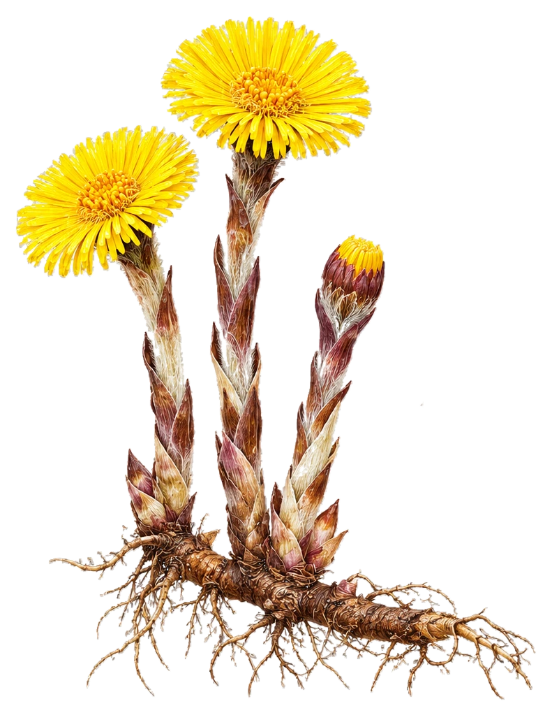

Hestehov – vårblomstring
Tussilago farfara · artsillustrasjon, godkjent for Finn Flora

To årstidsstadier må skilles
Botanisk kontroll bestått · foto som reserve
Vår: Gule blomsterkurver på skjellkledde stengler, uten store grønne blad. Dette er stadiet i tegningen.
Etter blomstring: Store, hjerte- til hovformede blad med lys underside vokser fram. Dokumenteres separat med fotografi.
Illustrasjonen har transparent bakgrunn, kontrollert mot sort. Den er frigitt til Finn Flora med artsfoto som reserve ved bildefeil.